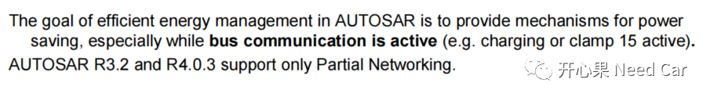
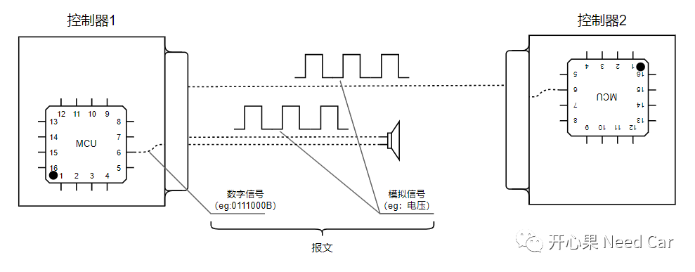
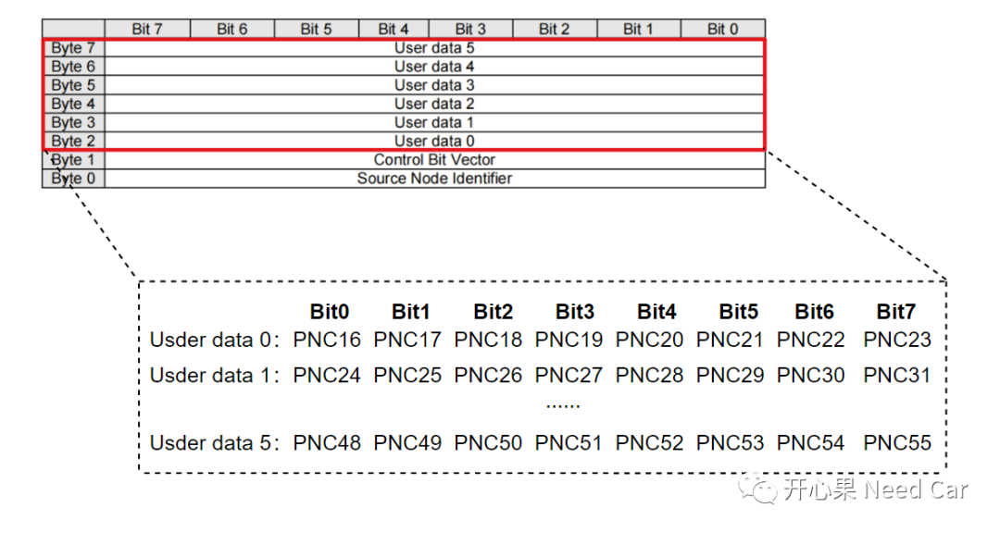
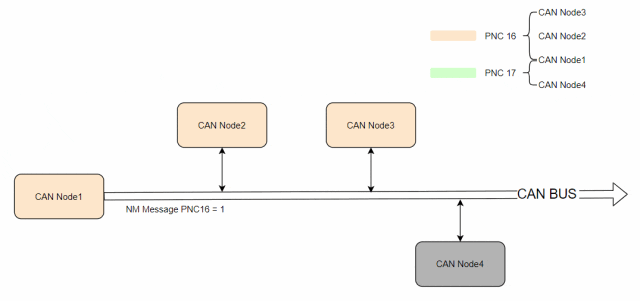

开心果 Need Car · 2023-08-23T07:21:00+08:00 · 微信原文
做网络管理的小伙伴可能会说：“网络管理中，使用PN（Partial Networking）功能可以更节能”。可是，实际的开发中，你可能发现：即使使用了PN功能，但是控制器（ECU）依然可以被非相关的网络管理报文唤醒，ECU的电流依然和带载时一样，怎么就节能了呢？应该如何理解PN功能更节能呢？带着这些疑惑，本文谈谈个人理解。
不管是OSEK/VDX还是Autosar NM，都在约束节点的通信行为，也就是节点内部/外部的通信行为。所以，个人理解，网络管理是在约束节点的网络状态，以达到约束节点间的通信行为。如果说网络管理具有"节能"的作用，应该说是PN功能的节能，因为只有PN功能划分了局部网络簇，进而实现了部分节点的网络休眠（停发报文）。

1、PN是什么？
认识PN之前，先认识一下NM（Network Management，网络管理）。没有NM之前，控制器也运行的"很好"，没啥问题。为什么就横空出现了NM呢？开始出现OSEK网络管理，后来基于OSEK网络管理又衍生出Autosar网络管理，Autosar网络管理又包含局部网络管理。
当某个新生事物出现时，一定与某种“诉求”相关，这个诉求是什么呢？答：节能，更准确地说：PN节能。所以，网络管理就是为节能而生的“石猴”，有些难搞，PN更难搞。我们讨论的节能，本质就是减少能量的消耗，而车辆消耗能量最直接的体现就是执行器件工作。但是，网络管理和执行器件的关联是什么呢?我们知道，网络管理的本质是约束总线上报文的通信行为，即：网络管理报文充当着交警的角色，非网络管理报文就是马路上穿流的汽车，交警有权指挥车辆的通行与否。所以，网络管理报文约束着非网络管理报文的发送和禁用。而报文的最终目的是控制对应执行器，所以，报文的发送与否也就决定着执行器能否工作。
在软件层面，开发人员使用高级语言编写控制逻辑（代码），这些代码经过编译，处理成数字信号，而数字信号无法直接控制执行器工作，需要转换成模拟信号（eg：电压值），通过物理线束送达对应的接收控制器或者执行器，示意如下：

不管是数字信号，还是模拟信号，都是在传输报文。
回到问题：PN是什么呢？答：PN是局部网络管理。PN功能的实现，依赖于网络管理报文，即：控制局部网络状态的PNC（Partial Network Cluster）信息包含在网络管理报文的User Data部分，如下所示：

2、为什么PN功能可以更节能？
当网络管理使能了PN功能以后，假设：某个CAN网段，CAN Node1、CAN Node2、CAN Node3组成局部网络簇PNC16，CAN Node1、CAN Node4组成局部网络簇PNC17。eg：CAN Node1发送的NM Message中，PNC16置位时（=1），CAN Node1、CAN Node2、CAN Node3三者可以正常通信，CAN Node4不在PNC16中，停发报文，进而实现了部分节能。同理，CAN Node1发送的NM Message中，PNC17置位时（=1），由于CAN Node2、CAN Node3不在局部网络簇PNC17中，停发报文，实现部分节能。局部网络的通信行为示意如下所示：

在实际的工程开发中，如果讨论PN的节能功能，需要从软/硬件两个层面讨论。
硬件：如果使用收/发器支持PN过滤功能，且使用了其PN功能。那么，对应的节点唤醒必须是特定的网络管理报文，即：包含指定PNC #n的网络管理报文，否则，即使节点收到网络管理报文，由于PNC #n与其不关联，节点也不会唤醒，进而达到节能的目的。如果使用的收/发器不支持PN过滤功能，即使节点唤醒，节点的网络也不会唤醒，但是，此时的节点静态电流可能已经拉高，这是因为此类收/发器受到总线的扰动，满足了收发器的唤醒时序，收/发器触发电源管理模块，激活uC，进而使得uC处于供电状态（唤醒）。虽然节点激活，静态电流上来，但是，由于节点没有发送对应的应用报文，对应的执行器也不会工作，进而实现了部分节能的作用。
往期精彩回顾
Autosar EcuM：APP由RUN到POST_RUN浅析
基于Hightec+TC375TP的RT-Thread移植详解